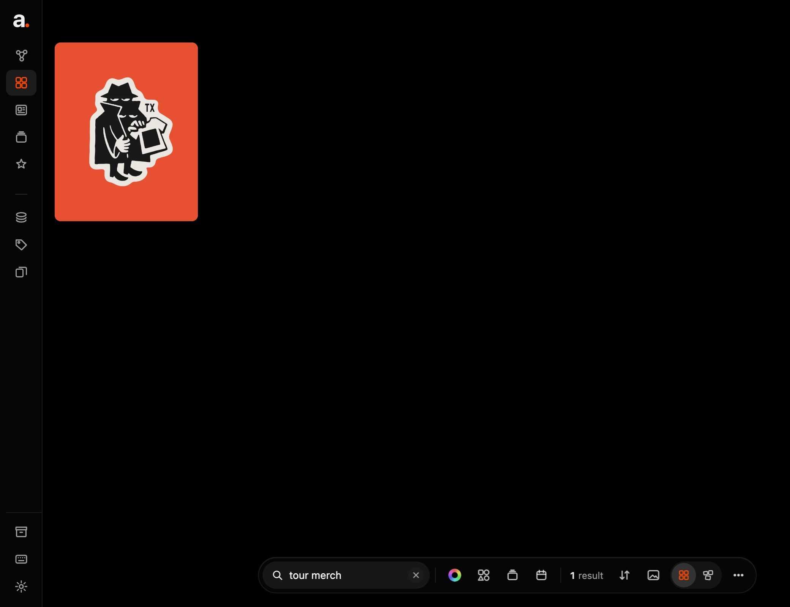
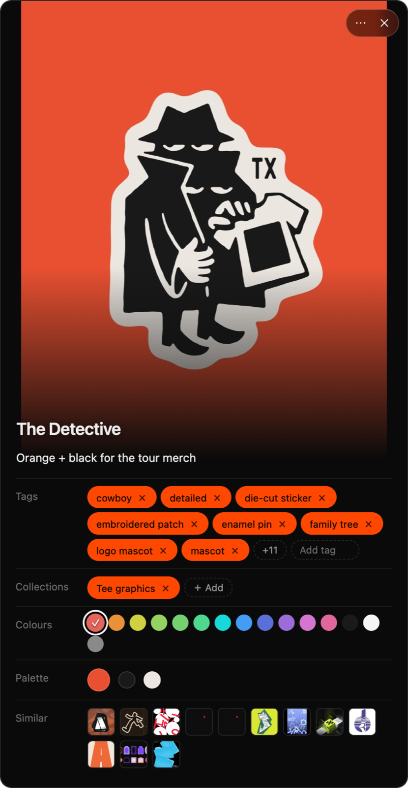
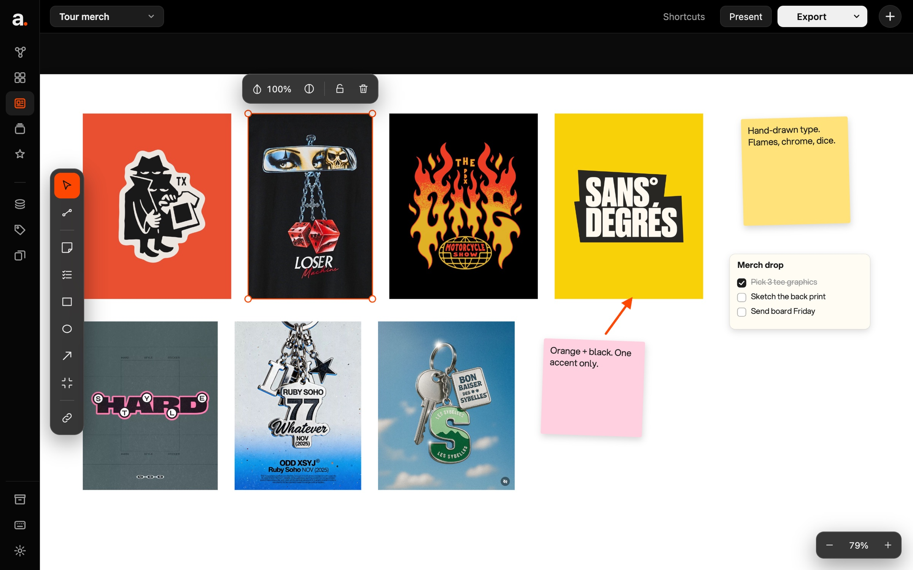
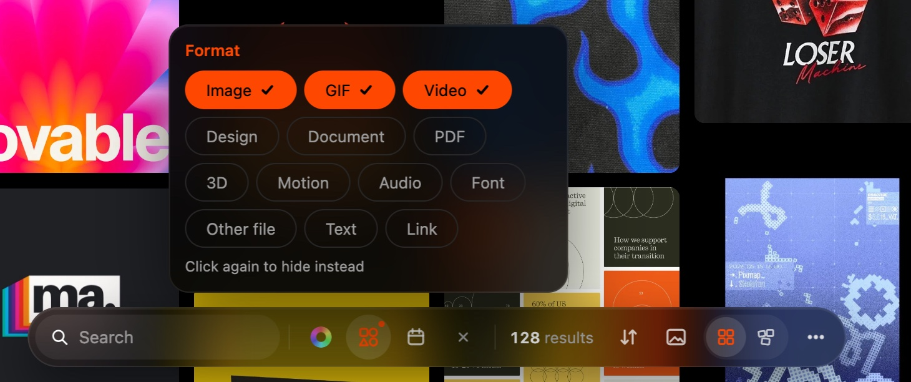

01
Every kind of thing has its own app.
Pictures in Pinterest, notes in Notion, fonts in a folder. You have to guess where to look.
Save, remember and use your ideas.
A desktop app for everything you save. I started it for myself, then researched, designed and built it alone, from first idea to a working app.
The problem
01
Pictures in Pinterest, notes in Notion, fonts in a folder. You have to guess where to look.
02
A week later it's one more picture in a pile of thousands.
03
If saving takes more than a few seconds, they're gone.
"I save inspiration for every project. When the deadline hits, I end up using whatever I can find right then, or whatever I saved last week."
Research
Five apps people already use to save things, side by side.
01 · Saving
Right-click, Add to arc. It's saved at once; the reason and tags can come after.
Right-click a Pinterest board and every image on it lands in arc, all at once.
Highlight a line on any website, right-click, and it's kept as a note, with the page it came from.
arc supports more than 20 file types, from images and fonts to Photoshop files and 3D models, and helps you manage and sort them all in one place.
02 · Retrieval
An idea is clearest the moment you save it, so arc asks why. Later, search that reason, a tag arc added, or a colour.


Drag round the ring and the grid filters as you go. The centre shows how many match.
One box searches names, the tags arc added, and the reason you gave when you saved it.
Narrow it to a date or a collection, sort by colour, and switch between Grid and Freeform.
03 · Ideas stay
Press ⌘⇧V in any app and speak. It works offline, and your voice never leaves your computer.
And more
Drag pictures onto a board, add notes, arrows and to-dos, and export a PNG or PDF for the client.

Design style
Dark greys keep the focus on what you save. SF Pro for all the text, and orange for what's selected.
Typography
Aa
SF Pro
The Mac's own typeface. Display for headings, Text for everything else.
Colour

Still being built
arc hasn't launched yet.